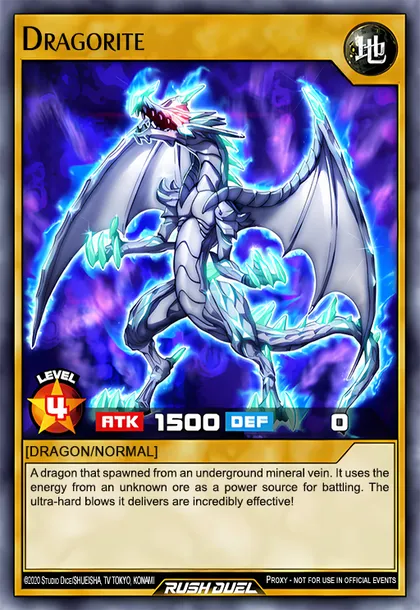
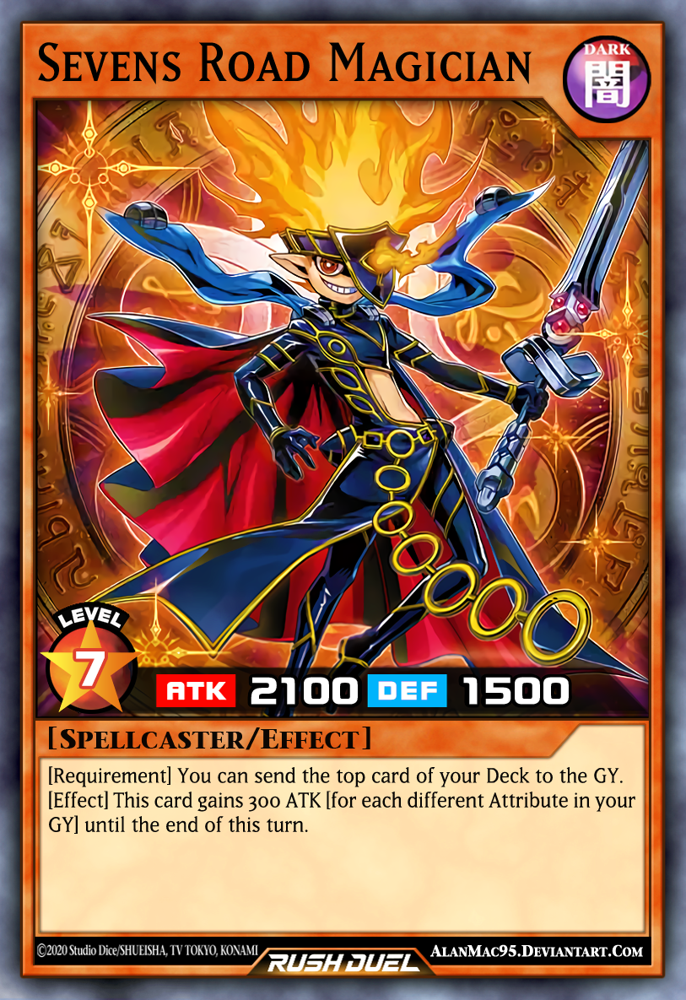
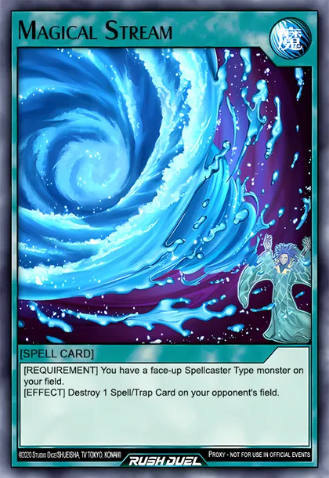
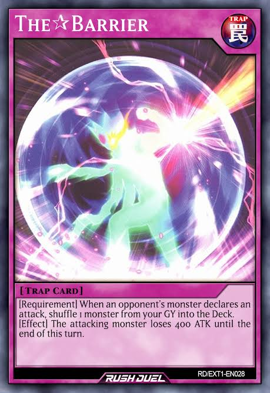
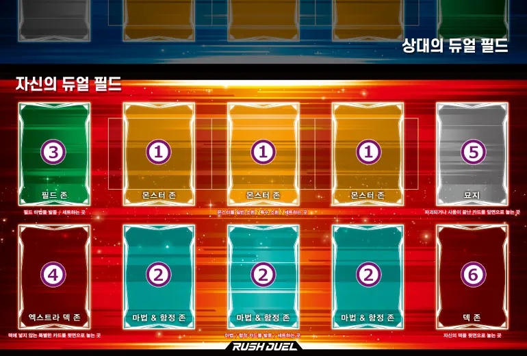
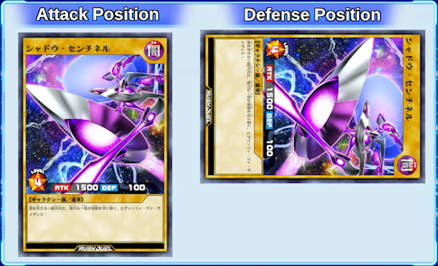
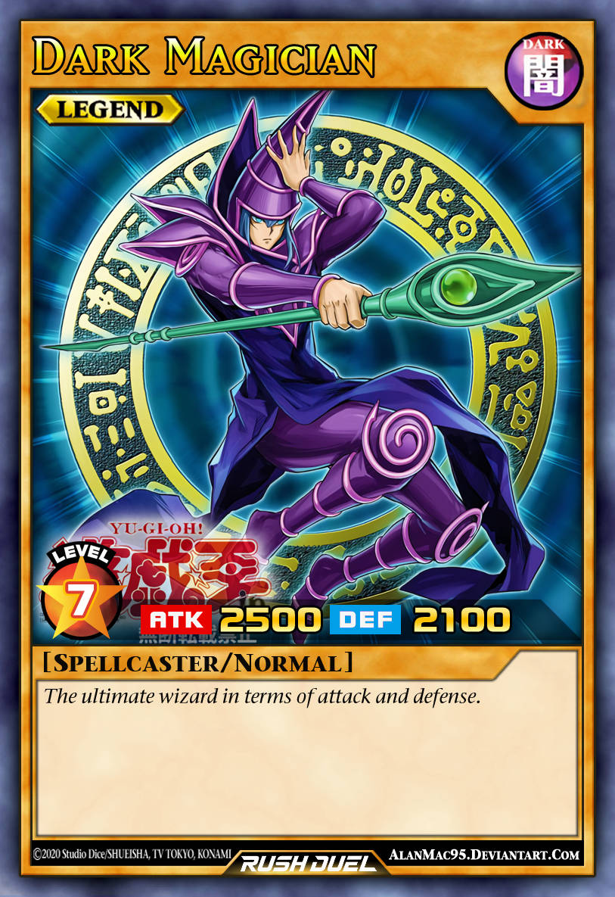
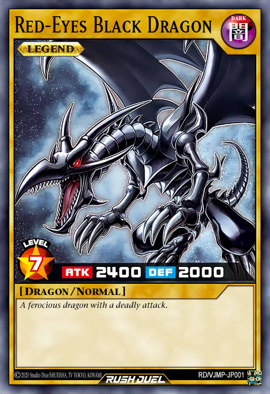
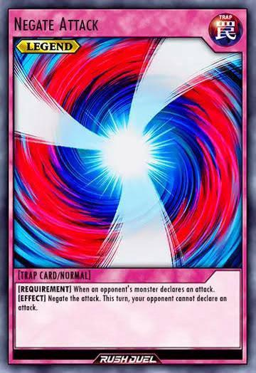

GUÍA DEL DUELISTA
Rush Duel es una forma de jugar Yu-Gi-Oh! pensada para que los duelos sean rápidos, claros y fáciles de aprender. Puedes invocar todos los monstruos que quieras en un mismo turno, robas hasta tener 5 cartas en la mano y cada carta separa lo que necesitas cumplir ([REQUISITO]) de lo que consigues ([EFECTO]). Menos reglas, más acción.
El objetivo es derrotar a tu oponente reduciendo sus puntos de vida, conocidos como LP (Life Points), de 8000 a 0.
Existen tres maneras principales de ganar:
En Rush Duel solo necesitas conocer tres tipos de cartas: monstruos, magias y trampas.

Son monstruos que no tienen efectos especiales. Su utilidad está principalmente en sus puntos de ataque y defensa.
No necesitan cumplir condiciones para utilizar un efecto porque no tienen ninguno. El texto de la carta solo cuenta su historia.
Ejemplo: Dragorite. Es un monstruo normal de Nivel 4 con 1500 de ATK y 0 de DEF. Lo Invocas y atacas con él: no hay nada más que activar.

1 2 3 4 5 6Poseen habilidades especiales que pueden ayudarte durante el duelo.
Por ejemplo, pueden aumentar su ATK, destruir cartas, robar cartas, recuperar monstruos del Cementerio o debilitar al rival.
Ejemplo: Sevens Road Magician. Es un monstruo de efecto de Nivel 7 con 2100 de ATK y 1500 de DEF. Su efecto se divide en dos partes, que verás explicadas más abajo.
Los números de la carta de arriba señalan cada una de estas partes:
El nombre de la carta.
Hay seis: LUZ, OSCURIDAD, TIERRA, AGUA, FUEGO y VIENTO.
Cuanto más alto, más fuerte es el monstruo. Los de Nivel 5 o más necesitan Sacrificios para Invocarse.
ATK (Attack) son los puntos de ataque y DEF (Defense) los puntos de defensa.
Dragón, Guerrero, Lanzador de Conjuros... y si el monstruo es Normal o de Efecto.
En los monstruos de efecto aquí están el [REQUISITO] y el [EFECTO].
Cada efecto tiene dos partes: primero cumples el [REQUISITO] y después se aplica el [EFECTO]. Si no puedes cumplir el Requisito, no puedes activar la carta. Veámoslo con Sevens Road Magician:
Manda al Cementerio la carta de la parte superior de tu Deck.
Es lo que tienes que hacer para poder usar el efecto: tomas la carta de arriba de tu Deck y la envías al Cementerio.
Esta carta gana ATK igual [al número de Atributos diferentes en tu Cementerio] x 300 hasta el final de este turno.
Es lo que consigues. Si en tu Cementerio hay monstruos de 3 Atributos distintos, gana 900 de ATK (de 2100 pasa a 3000) hasta el final del turno.

Son cartas que se juegan directamente desde la mano para cambiar el rumbo del duelo. Al activarla se aplica su efecto y después va al Cementerio.
Puedes activar todas las que quieras en tu turno, siempre que cumplas su Requisito. También puedes colocarlas boca abajo y activarlas más tarde.
[REQUISITO] Tienes un monstruo de Tipo Lanzador de Conjuros boca arriba en tu Campo.
[EFECTO] Destruye 1 Carta Mágica/de Trampa del Campo de tu adversario.
Ejemplo: Magical Stream. Si controlas un Lanzador de Conjuros, puedes usarla para destruir una Magia o Trampa de tu rival.
Además de las Magias normales, existen las Magias de Campo (van en la Zona de Campo y su efecto se aplica mientras estén boca arriba) y las Magias de Equipo (se equipan a un monstruo).

Son cartas especiales que también pueden activarse en el turno de tu oponente. Se usan colocándolas primero boca abajo en tu campo.
No puedes activarla el mismo turno en que la colocas: podrás usarla desde el siguiente turno de tu oponente. Cada Trampa indica en su Requisito cuándo puede activarse (por ejemplo, cuando un monstruo rival declara un ataque). Después de usarla va al Cementerio.
[REQUISITO] Cuando un monstruo del adversario declara un ataque, baraja 1 monstruo desde tu Cementerio al Deck.
[EFECTO] El monstruo atacante pierde 400 de ATK hasta el final de este turno.
Ejemplo: The Barrier. Cuando tu rival ataca, barajas un monstruo de tu Cementerio al Deck y su monstruo atacante pierde 400 de ATK.
Si dos o más Trampas pueden activarse al mismo tiempo, solo se activa una: decide primero el jugador al que no le toca el turno.
Los jugadores se turnan, y cada turno tiene 4 fases que siempre ocurren en este orden:
Robas cartas hasta tener 5 en la mano. Si ya tienes 5 o más, robas 1 carta. No hay límite de cartas en la mano. El jugador que empieza también roba en su primer turno.
Aquí preparas tu estrategia: Invocas monstruos (todos los que quieras), cambias posiciones de batalla, activas efectos de monstruos, activas Magias y colocas Trampas.
Atacas con tus monstruos en Posición de Ataque. Cada uno puede atacar una vez por turno. El jugador que empieza no tiene Battle Phase en su primer turno.
Anuncias que terminas tu turno y pasa a tu oponente.
El campo es el tablero donde se colocan las cartas. Cada jugador tiene su propio lado, con estas zonas:

Aquí Invocas de Modo Normal, Invocas de Modo Especial o colocas tus monstruos.
Aquí activas o colocas tus Magias y Trampas.
Aquí se activan o se colocan las Magias de Campo.
Aquí se coloca tu Extra Deck, boca abajo. Es un mazo aparte de tu Deck.
Aquí van, boca arriba, las cartas destruidas o que ya terminaste de usar.
Aquí colocas tu Deck boca abajo. De aquí robas tus cartas.
En tu Main Phase pasas un monstruo de tu mano a una Zona de Monstruo, boca arriba en Posición de Ataque. En Rush Duel puedes hacer todas las que quieras en un mismo turno.
También puedes colocar el monstruo boca abajo en Posición de Defensa. Igual que con la Invocación Normal, no hay límite por turno.
Los monstruos de Nivel 5 o más necesitan Sacrificios (enviar monstruos de tu campo al Cementerio):
Es poner un monstruo en el campo por el efecto de una carta, sin que sea una Invocación Normal ni colocarlo. Cada carta indica cómo y desde dónde.

Boca arriba y en vertical. Puede atacar, y si es atacado se usa su ATK.
Boca arriba y en horizontal. No puede atacar, y si es atacado se usa su DEF.
Los monstruos colocados (Set) están boca abajo en horizontal. Si los atacan, se giran boca arriba antes de comparar su DEF.
En la Battle Phase eliges un monstruo tuyo para atacar y un monstruo rival como objetivo. Si tu rival no tiene monstruos, puedes hacer un ataque directo.
| Situación | Resultado |
|---|---|
| Ataque directo (el rival no tiene monstruos) |
El rival recibe daño igual al ATK de tu monstruo. |
| Atacas a un monstruo en Posición de Ataque (se compara ATK contra ATK) | |
| Tu ATK es mayor | Se destruye el monstruo rival y tu rival recibe la diferencia como daño. |
| Los ATK son iguales | Se destruyen los dos monstruos y nadie recibe daño. (Si ambos tienen 0 de ATK, no se destruye ninguno.) |
| Tu ATK es menor | Se destruye tu monstruo y recibes la diferencia como daño. |
| Atacas a un monstruo en Posición de Defensa (se compara tu ATK contra su DEF) | |
| Tu ATK es mayor que su DEF | Se destruye el monstruo rival, pero tu rival no recibe daño. |
| ATK y DEF son iguales | No se destruye ningún monstruo y nadie recibe daño. |
| Tu ATK es menor que su DEF | No se destruye ningún monstruo, pero recibes la diferencia como daño. |
Ejemplo: tu monstruo de 2500 ATK ataca a otro en Posición de Ataque con 2000 ATK. El monstruo rival se destruye y tu rival pierde 500 LP.
Las cartas LEGEND son cartas muy poderosas que normalmente pertenecen a la época clásica de Yu-Gi-Oh!. Son los monstruos, magias y trampas más icónicos de la historia de la serie, y suelen ser de las cartas más fuertes y más buscadas de un Deck. Por eso su uso está limitado.



Lista de duelistas.
Aquí aparecerán las ciudades, tiendas y zonas importantes.
Historia principal del mundo.